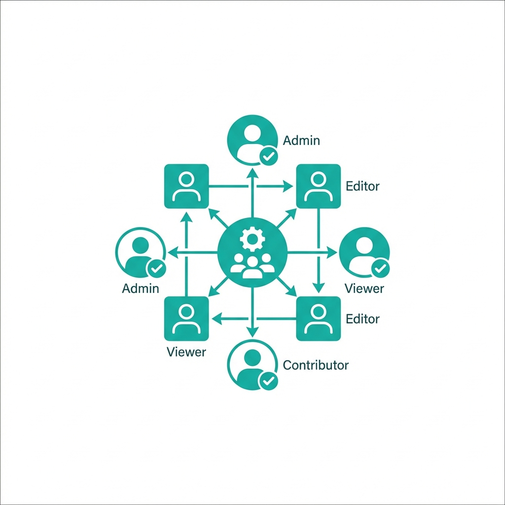

Everything you need to stay on top of BCBA fieldwork. Easy hour tracking, simple data editing, better supervisor communication, and guidance that stays aligned with BACB requirements.
Built specifically for the BACB fieldwork requirements.
Choose the fieldwork path that fits you and adjust as needed. Fieldly keeps your hours flexible, clearly organized, and visually displayed, making it easy to understand your progress at a glance.
Fieldwork comes with many moving parts, and managing everything at once can feel overwhelming. Fieldly brings hours, supervision, and progress into one clear space to help reduce stress and keep things easier to manage.

Track restricted and unrestricted hours in line with current BACB fieldwork requirements, with supervision and documentation kept organized and ready when you need them.
Trusted by RBTs at top organizations
Join thousands of trainees who have ditched their spreadsheets.
Get Started for Free